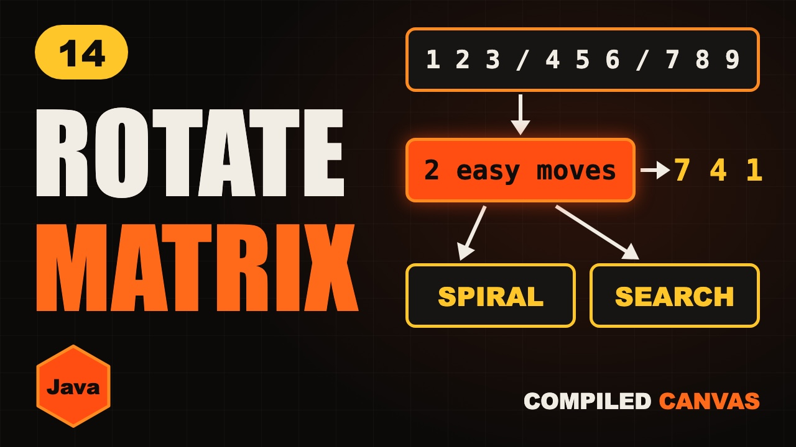

Rotate Matrix and Spiral Matrix in Java | 2D Arrays

The video goes live on 11 Nov 2026 at 6:00 PM IST. The notes are ready now.
?What this episode covers
A 2D array in Java is an array of arrays, reached with row first, then column. This episode covers the three grid questions interviews love, each with one simple trick.
To rotate a matrix 90 degrees clockwise in place, transpose it, then reverse each row. To print a spiral, think of four walls, top, bottom, left and right, that close in after each walk, with two extra checks for a single row or column.
To search a sorted matrix, stand on the top right corner. Everything to the left is smaller and everything below is bigger, so each comparison removes a whole row or column. That makes it O(rows + cols), about two thousand steps on a thousand by thousand grid instead of a million.
◎What you'll be able to do
- 2D array basics
- Rotate in place
- Spiral walk
- Fast search
!The mistake to watch for
Starting the transpose at j = 0 swaps every pair twice. Leaving out the two checks in spiral prints a single row twice.
✦Key moments tap one to jump there
- Three grid questions
- Today's plan
- 2D array basics
- Rotate: the slow way
- Rotate: the trick
- Rotate in Java
- Subscribe break
- Spiral: four walls
- Spiral in Java
- Two checks that matter
- Search: start at the corner
- Search in Java
- Your turn
- Cheat sheet
- Quiz time
- Recap
- LeetCode homework
- Next episode: Top 20 array interview questions
↗Full transcript
Read the whole lesson
An image on your phone is a grid of numbers. A game board is a grid. A spreadsheet is a grid.
Interviews love three grid questions. Rotate it, walk it in a spiral, and search it fast.
Each one looks scary. But each one has one simple trick, and you'll know all three in a few minutes.
Welcome back to Compiled Canvas. This is Episode Fourteen of our DSA series. Last time, we learned Moore's voting algorithm.
Here's the plan. First, the basics of 2D arrays in Java. Then rotate a matrix in place. Then the spiral. And then a fast search. A cheat sheet. And an easy quiz at the end.
Let's go.
In Java, a 2D array is an array of arrays. Each row is its own array.
You reach one number with two indexes, row first, then column. Grid one two is six.
Grid dot length gives the number of rows. Grid zero dot length gives the number of columns.
To visit every cell, use two loops. Outer for rows, inner for columns. That's rows times columns steps.
Question one. Rotate this grid ninety degrees, clockwise.
See what happens. The first row becomes the last column. One, two, three now stands on the right.
The easy way is a new grid, and copy each number across. But that uses extra memory, and the question says in place.
Here's the trick. Rotate is just two easy moves. Move one, flip the grid across its diagonal.
Rows become columns. Two swaps with four, three swaps with seven, six swaps with eight. The diagonal stays.
Move two, reverse every row. One, four, seven becomes seven, four, one.
And look, that's the rotated grid. Two easy moves, and no extra grid at all.
For counter clockwise, swap the order. Reverse each row first, and then transpose.
Here's the Java code. Two loops do the transpose.
See this j, it starts at i plus one. We only touch the cells above the diagonal. If j started from zero, each pair would swap twice, and you'd get the same grid back.
Then reverse each row, with the two pointers you already know.
It's O of n squared time, because we touch every cell. And O of one extra space.
Quick pause, before we go further. If you're finding this video valuable, hit subscribe to Compiled Canvas, and turn on the bell. It's free, it takes one second, and it helps me keep making this complete DSA series for you. Alright, back to it.
Question two. Print this grid in a spiral. Go right, down, left, up, and keep turning inward.
Don't think about turning. Think about four walls. Top, bottom, left and right.
Walk along the top row, left to right. One, two, three. The top row is done, so the top wall moves down.
Walk down the right side. Six, nine. The right wall moves in.
Walk along the bottom, right to left. Eight, seven. The bottom wall moves up.
Walk up the left side. Four. The left wall moves in.
Now the walls have closed in on five. One more round, and every number is done.
Here's the Java code. Four walls, and the loop runs while they haven't crossed.
Walk the top row, then move the top wall down.
Walk the right side, then move the right wall in.
The bottom and the left need one extra check. Look at these two ifs.
Take a grid with one row. One, two, three. After the top walk, the bottom row is the same row. Without the check, you'd print it again, backwards.
The left walk has the same danger for a single column. Every cell is visited once, so it's O of rows times columns.
Question three. This grid is sorted. Every row goes up left to right, and every column goes up top to bottom. Find five.
Checking every cell is too slow. So stand on the top right corner, on seven.
Why there? Because everything to the left is smaller, and everything below is bigger. So one comparison throws away a whole row or column.
Seven is bigger than five, so go left. The whole last column is gone.
Four is smaller than five, so go down. The top row is gone.
And here's five, found in three looks.
Here's the Java code. Start at row zero, last column.
Too big, go left. Too small, go down.
Each step removes a row or a column, so it's O of rows plus columns. For a thousand by thousand grid, that's two thousand steps at most, instead of one million.
Your turn. Pause. Rotate this two by two grid. One, two on top, three, four below.
Transpose gives one, three, then two, four. Reverse each row, and you get three, one, then four, two.
So, here's the whole thing in one cheat sheet. Pause and screenshot this.
Row first, then column.
Grid dot length is rows.
Rotate clockwise is transpose, then reverse each row.
In the transpose, j starts at i plus one.
Spiral means four walls that close in.
Add two checks for one row or one column.
Search from the top right corner.
Search takes O of rows plus columns.
Okay, quiz time. Three easy questions. Pause the video, think, and then hit play.
Question one. What does this print?
Question two. What are the two moves for a clockwise rotate?
Question three. In the search, the number is bigger than the target. Which way do you go?
Ready?
Question one: Six. Row one, column two.
Question two: Transpose, then reverse each row.
Question three: Left. Everything to the left is smaller.
How many did you get right? Tell me in the comments: three out of three, two, or one.
Let's recap. A 2D array is an array of arrays. Rotate is transpose, then reverse. Spiral is four walls closing in. Search starts at the top right corner. Every grid question has a simple trick.
Your homework. Solve LeetCode forty eight, rotate image. Then try fifty four, spiral matrix. And then two forty, search a 2D matrix two. Hints and Java answers are on compiled canvas dot com.
Next episode, the top twenty array interview questions, all in one video, sorted by pattern.
And don't forget to subscribe to Compiled Canvas, so you don't miss anything new in tech and the job market. Keep coding, stay consistent, and I'll see you in the next one.